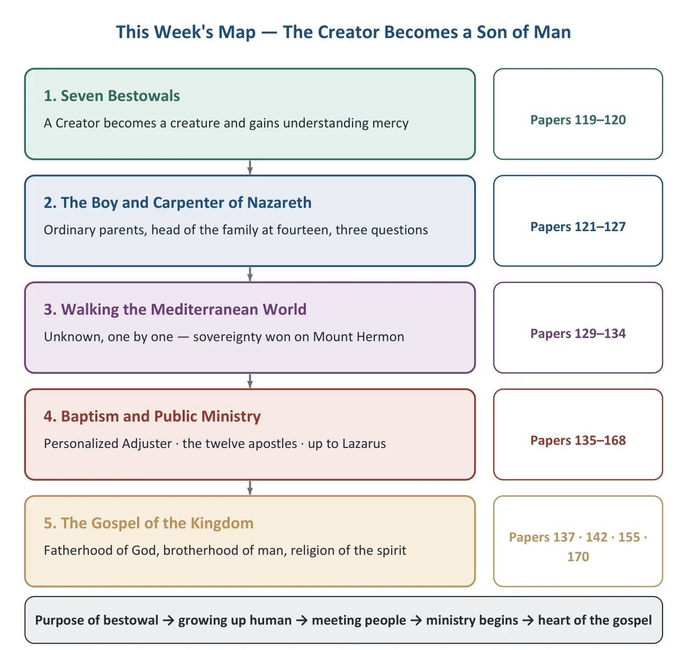
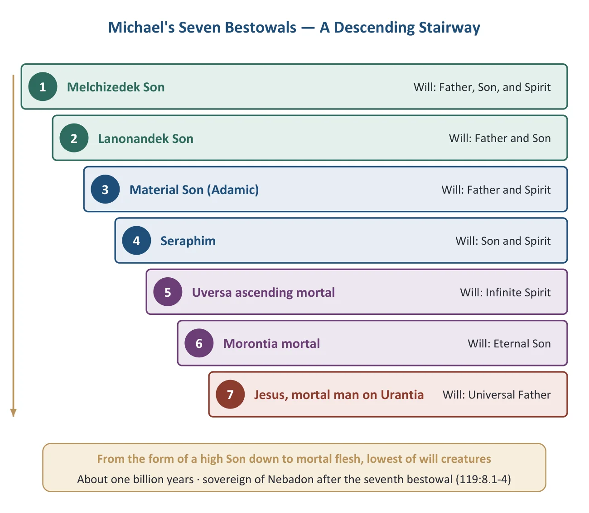
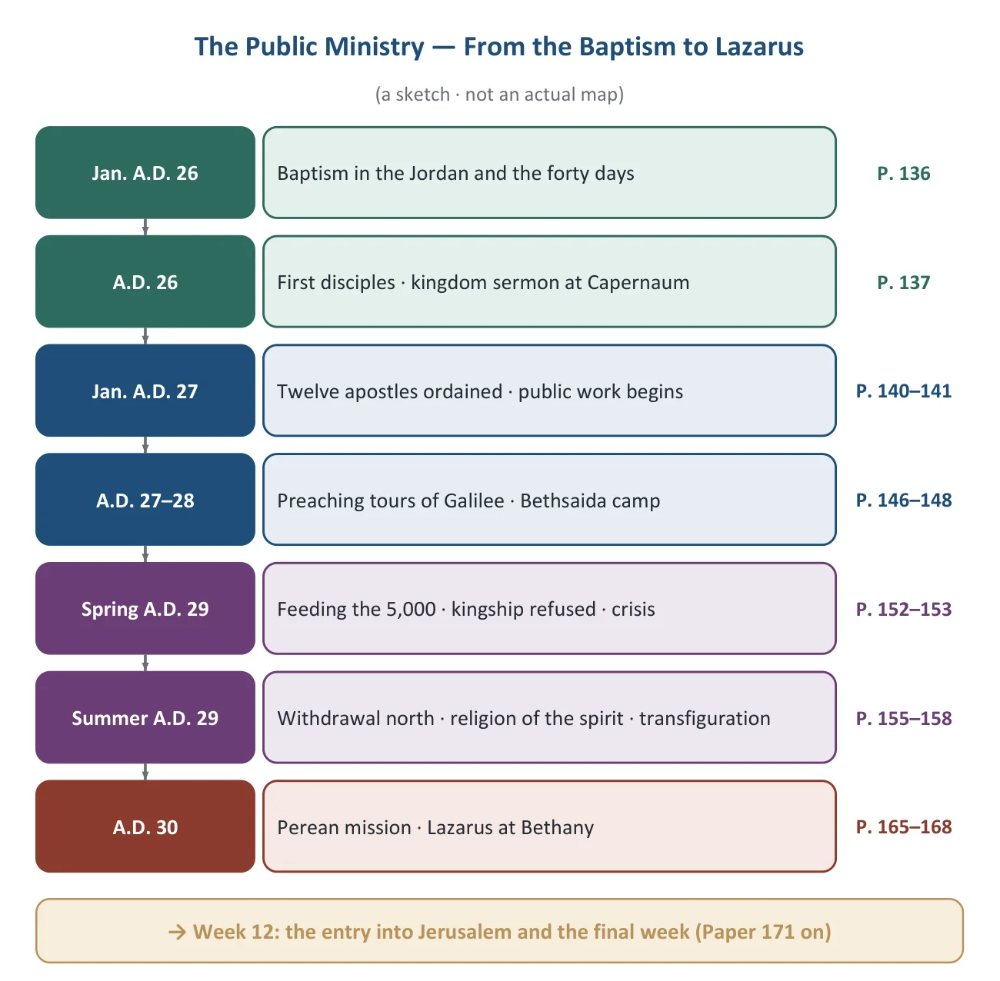
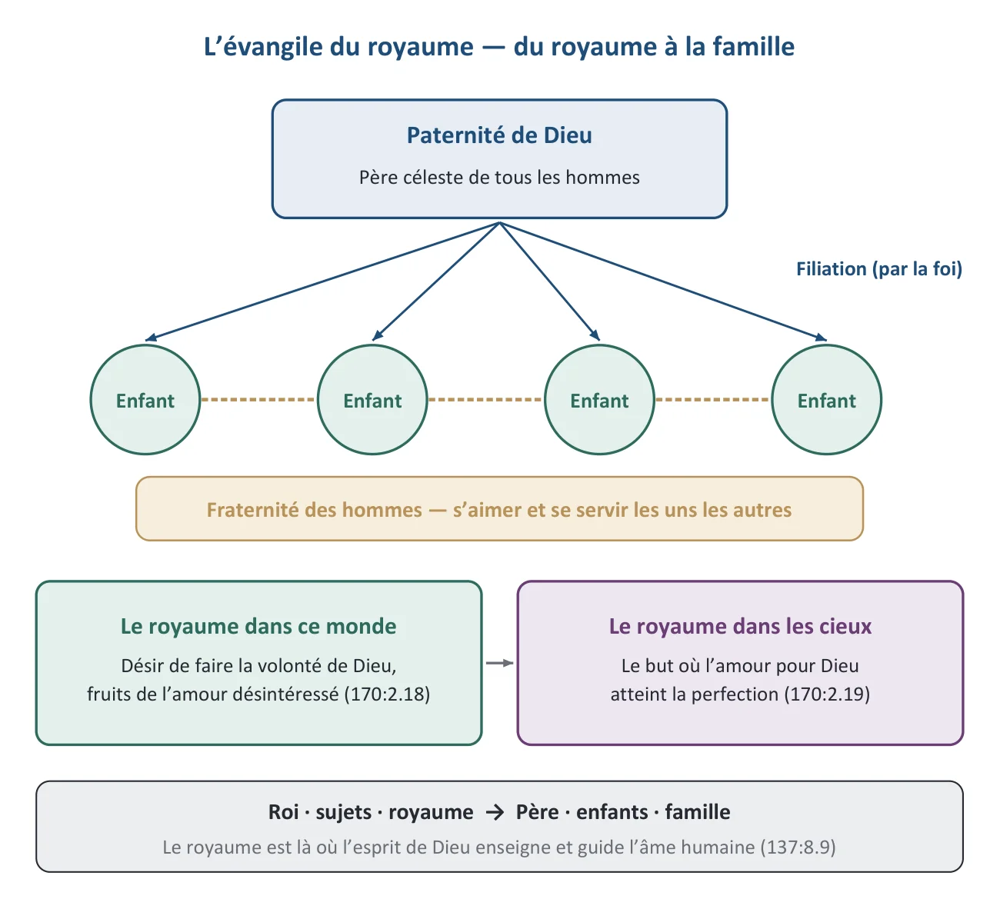

Le Créateur devient un Fils de l’Homme
Lecture : Fascicules 119–120 · Fascicules 121–127 · Fascicule 129 · Fascicule 132 · Fascicule 134 · Fascicules 136–137 · Fascicules 140–142 · Fascicule 155 · Fascicule 170

Micaël, le Fils Créateur qui a fait notre univers local, n’en devient le souverain à part entière qu’après avoir vécu sept fois à la ressemblance des êtres qu’il a créés. La septième et dernière de ces effusions est la vie de Jésus de Nazareth. Il est né bébé sans défense, a grandi dans une famille ordinaire, a perdu son père à quatorze ans et est devenu chef de famille, puis a parcouru le monde méditerranéen en rencontrant les gens un par un. Commençant son œuvre publique par son baptême dans le Jourdain, il prêcha un évangile simple : Dieu est le Père de tous, et tous les hommes sont frères et sœurs. Cette semaine suit les grandes lignes de sa vie et de son enseignement jusqu’à la dernière semaine.
Pour commencer
Imaginez un médecin qui a construit un grand hôpital. Personne ne connait mieux que lui son plan et son équipement médical. Puis, un jour, il revêt une blouse de patient et s’allonge dans un lit du service le plus chargé. Il veut sentir dans son propre corps les gémissements de la nuit, le repas refroidi, le long ennui de l’attente, et le réconfort que peut apporter une seule parole du médecin qui fait sa visite.
Celui qui connait l’hôpital et celui qui a été couché dans ses lits ne dirigeront pas le même hôpital de la même façon. Le premier sera juste. Le second sera juste, et en plus profondément compréhensif.
La quatrième partie du Livre d’Urantia est l’histoire du Créateur d’un univers qui s’allonge dans ce lit-là. Dans les parties un à trois, nous sommes partis du Paradis et sommes descendus à travers la longue histoire de Nébadon et d’Urantia. Maintenant, toutes ces routes convergent vers la vie d’un seul homme.
1. Sept effusions — les sept marches qu’a descendues Micaël
Pourquoi un Créateur devient une créature
Comme nous l’avons vu lors de la semaine 5, notre univers local de Nébadon a été fait par le Fils Créateur Micaël. Pourtant, faire un univers ne lui donne pas, à lui seul, la pleine souveraineté sur cet univers. Il doit vivre comme l’une de ses propres créatures. Cet acte, par lequel un Fils divin s’abaisse et entre dans la vie des créatures, s’appelle une effusion. Le fascicule 119 en explique le but.
Le but de ces incarnations sous forme de créatures est de permettre à ces Créateurs de devenir des souverains sages, compatissants, justes et compréhensifs. Ces Fils divins sont naturellement justes, mais ils deviennent d’une bienveillance miséricordieuse à la suite de ces expériences successives d’effusion. Ils sont naturellement miséricordieux, mais ces expériences les font devenir encore plus miséricordieux et d’une nouvelle manière.119:0.4
Même un Fils de Dieu apprend par l’expérience. La miséricorde était là dès le début, mais une fois vécue de l’intérieur, elle devient « miséricorde compréhensive ».
Il avait fallu presque un milliard d’années du temps d’Urantia pour parachever la carrière d’effusion de Micaël et pour procéder à l’établissement définitif de son autorité suprême dans l’univers de sa propre création. Micaël naquit créateur, il fut éduqué comme administrateur, formé comme directeur exécutif, mais il lui fallut gagner sa souveraineté par expérience.119:8.2
Sept marches
À chaque effusion, il se soumit à un aspect différent de la volonté des Déités du Paradis.
Dans son effusion Melchizédek, il manifesta la volonté unifiée du Père, du Fils et de l’Esprit. Dans son effusion Lanonandek, il manifesta la volonté du Père et du Fils. Dans l’effusion adamique, il révéla la volonté du Père et de l’Esprit, et, dans l’effusion séraphique, la volonté du Fils et de l’Esprit. Dans l’effusion en tant que mortel sur Uversa, il dépeignit la volonté de l’Acteur Conjoint et, dans l’effusion de mortel morontiel, la volonté du Fils Éternel. Enfin, dans l’effusion matérielle sur Urantia, il vécut la volonté du Père Universel, précisément comme un mortel de chair et de sang.119:8.4
L’escalier descend. Il commence sous la forme d’un Fils élevé, passe par l’ange et le mortel ascendant, et atteint enfin la chair mortelle, la place la plus basse parmi les créatures volitives. Et c’est seulement sur cette dernière marche qu’il vit directement la volonté du Père Universel.

| Ordre | Forme de l’effusion | Volonté suivie |
|---|---|---|
| 1 | Fils Melchizédek | Volonté unifiée du Père, du Fils et de l’Esprit |
| 2 | Fils Lanonandek (Souverain de Système) | Volonté du Père et du Fils |
| 3 | Fils Matériel (adamique) | Volonté du Père et de l’Esprit |
| 4 | Séraphin | Volonté du Fils et de l’Esprit |
| 5 | Mortel ascendant d’Uversa | Volonté de l’Esprit Infini (Acteur Conjoint) |
| 6 | Mortel morontiel | Volonté du Fils Éternel |
| 7 | Jésus, homme mortel sur Urantia | Volonté du Père Universel |
Venir comme un bébé
Les êtres célestes savaient que la septième effusion se ferait dans la chair mortelle, mais non de quelle manière. Lors de toutes les effusions précédentes, Micaël était apparu adulte.
Jusqu’au moment de l’évènement lui-même, nous n’avions jamais su que Micaël apparaitrait sur terre comme un bébé impuissant du royaume, mais nous avions pensé qu’il emploierait cette méthode. Auparavant, il était toujours apparu comme un individu pleinement développé du groupe de personnalités choisi pour l’effusion. Quand la télédiffusion de Salvington annonça que le petit enfant de Bethléem était né sur Urantia, cette nouvelle fit sensation.119:7.3
Le souverain d’un univers commença comme un bébé incapable de rien faire par lui-même. Avant son départ, son frère ainé Emmanuel lui donna cette charge.
Tout au long de ton effusion sur Urantia, tu n’as besoin de te soucier que d’une chose, la communion ininterrompue entre toi et ton Père du Paradis. Et ce sera par la perfection d’une telle relation que le monde de ton effusion, et même tout l’univers de ta création, percevront une révélation nouvelle et plus compréhensible de ton Père et de mon Père, le Père Universel de tous.120:1.4
Voici la clé de toute la vie de Jésus. Sa tâche était de garder ininterrompue sa communion avec le Père, et cette communion elle-même devint la révélation du Père. Jésus était-il alors à moitié Dieu et à moitié homme ? Le fascicule 120 répond clairement.
Il n’était pas Dieu en association avec l’homme, mais plutôt Dieu incarné dans l’homme, et il fut toujours précisément cet être composé.120:4.2
Mots nouveaux
- Effusion : un Fils divin qui s’abaisse pour entrer dans un monde et y vivre à la ressemblance de ses créatures.
- Incarnation : la naissance d’un être divin dans un corps humain. La façon dont elle se produit reste un mystère éternel (119:7.5).
- Emmanuel : un être élevé qui représente la Trinité du Paradis dans Nébadon ; il veilla sur l’univers pendant les effusions de Micaël.
En regard de la Bible
L’épitre aux Philippiens dit que le Christ « s’est dépouillé lui-même, en prenant une forme de serviteur, en devenant semblable aux hommes » (Philippiens 2:7). L’épitre aux Hébreux parle d’un souverain sacrificateur qui a été « tenté comme nous en toutes choses » et qui peut ainsi « compatir à nos faiblesses » (Hébreux 4:15). L’idée d’effusion du Livre d’Urantia place ce dépouillement et cette compassion dans une vision cosmique en sept marches.
2. L’enfant et le charpentier de Nazareth — la maison de Joseph et de Marie
Le moment le plus favorable
L’époque où naquit Jésus ne fut pas choisie au hasard. Rome avait réuni la Méditerranée en un seul monde, le grec était compris presque partout, et de bonnes routes et des mers sures faisaient circuler rapidement les idées.
Lorsque Micaël s’incarna sur Urantia, le monde offrait, pour l’effusion du Fils Créateur, les conditions les plus favorables qui aient jamais prévalu précédemment ou se soient présentées par la suite.121:1.1
Pourtant, sous la prospérité extérieure, les âmes avaient faim. Les mythes, le culte de l’empereur, l’astrologie et les cultes à mystères venus d’Orient promettaient tous le salut. Le livre voit jusque dans cette faim une partie de la préparation à la venue de Jésus.
La popularité des mystères révèle que les hommes cherchent à survivre, ce qui dépeint une faim et une soif réelles de religion personnelle et de droiture individuelle. Bien que les mystères n’aient pas satisfait ces aspirations d’une manière adéquate, ils préparèrent effectivement le chemin à l’apparition subséquente de Jésus, qui apporta vraiment à ce monde le pain de vie et l’eau vive.121:5.12
C’est dans une pareille génération d’hommes dominés par de tels systèmes philosophiques incomplets, et troublés par de tels cultes religieux complexes que Jésus naquit en Palestine. C’est à cette même génération qu’il donna ultérieurement son évangile de religion personnelle — la filiation avec Dieu.121:5.18
À une génération épuisée par des rites compliqués fut remise la plus simple des vérités : Dieu est un Père, et nous sommes ses enfants.
Des parents ordinaires
Jésus naquit à Bethléem le 21 aout de l’an 7 av. J.-C. Le livre l’appelle Joshua ben Joseph, c’est-à-dire Joshua fils de Joseph. Ses parents n’étaient pas des gens remarquables.
Le plan de Micaël était d’apparaitre sur terre comme un homme moyen, afin que le commun des mortels puisse le comprendre et l’accueillir. C’est pourquoi Gabriel fit précisément le choix de personnes comme Joseph et Marie pour devenir les parents d’effusion.122:1.3
Joseph était un charpentier calme et réfléchi ; Marie était gaie, franche et pratique. Leur fils reçut des dons différents de chacun d’eux.
Jésus tenait de son père beaucoup de sa douceur exceptionnelle et de sa merveilleuse compréhension sympathisante de la nature humaine ; il avait hérité de sa mère son don de grand éducateur et son immense capacité de juste indignation. Dans ses réactions émotionnelles envers son entourage pendant sa vie adulte, Jésus était parfois, comme son père, méditatif et pieux, parfois caractérisé par une tristesse apparente, mais, le plus souvent, il allait de l’avant de la manière optimiste et déterminée correspondant au naturel de sa mère.122:5.3
Un petit épisode survenu vers sa cinquième année annonce la foi de toute sa vie.
Il insistait pour parler à son Père céleste comme il aurait parlé à Joseph, son père terrestre. Cette infraction aux moyens plus solennels et plus révérencieux de communication avec la Déité était un peu déconcertante pour ses parents, spécialement pour sa mère, mais on ne pouvait le persuader de changer ; il disait ses prières exactement comme on les lui avait apprises, après quoi il insistait pour avoir « juste un petit entretien avec mon Père dans les cieux ».123:3.6
L’appel à treize ans
À treize ans, Jésus monta à Jérusalem pour sa première Pâque. En regardant les foules au temple, son cœur se remplit de compassion, et cette nuit-là un messager céleste vint à lui pour la première fois.
Ce fut l’un des jours les plus extraordinaires de l’incarnation du Fils de Dieu. Durant cette nuit, pour la première fois dans sa carrière terrestre, un messager spécial de Salvington commissionné par Emmanuel, lui apparut et dit : « L’heure est venue. Il est temps que tu commences à t’occuper des affaires de ton Père. »124:6.15
Les deux années les plus dures
Juste après l’appel vint l’épreuve. Le livre désigne comme la période la plus dure de la vie de Jésus non pas la croix, mais ses quatorzième et quinzième années.
Les deux années comprises entre le moment où il commença à prendre conscience de sa divinité et de son destin, et celui où il réussit à communiquer, dans une large mesure, avec son Ajusteur intérieur furent les plus éprouvantes de sa vie mouvementée sur Urantia.126:0.1
En septembre de l’an 8 apr. J.-C., Joseph fut mortellement blessé par la chute d’un mât de levage alors qu’il travaillait sur un bâtiment à Sepphoris. Tous les projets d’études à Jérusalem s’effondrèrent.
Le jeune charpentier, qui venait tout juste d’avoir quatorze ans, prit conscience qu’il avait non seulement à révéler la nature divine, sur terre et dans la chair selon la mission reçue de son Père céleste, mais encore il fallait que sa jeune nature humaine endossât la responsabilité de prendre soin de sa mère veuve et de ses sept frères et sœurs — sans compter un autre enfant attendu.126:2.2
Jésus accepta de bon cœur les responsabilités qui s’abattaient si soudainement sur lui, et les assuma fidèlement jusqu’au bout. … Il resta perpétuellement vrai que Jésus « n’était le disciple de personne ». Il était toujours prêt à apprendre, même du plus humble petit enfant, mais jamais il ne puisa dans des sources humaines son autorité pour enseigner la vérité.126:2.3
Depuis la naissance de Ruth, la plus jeune, jusqu’au début de son ministère public, il fut un père pour ses frères et sœurs. La première prière qu’il écrivit pour la famille devint plus tard le Notre Père (126:3.3-4). Tout en travaillant comme charpentier, il pesait chaque institution du monde à l’aide de trois questions.
Avec le temps, le jeune charpentier de Nazareth mesura de mieux en mieux chaque institution de la société et chaque coutume de la religion par un critère invariable. Que fait-elle pour l’âme humaine ? Rapproche-t-elle Dieu de l’homme ? Mène-t-elle l’homme à Dieu ? Tout en ne négligeant pas complètement les aspects récréatifs et sociaux de la vie, ce jeune homme consacra de plus en plus son temps et ses forces à deux buts seulement : prendre soin de sa famille et se préparer à accomplir sur terre la volonté de son Père céleste.126:2.5
Les lecteurs d’aujourd’hui peuvent reprendre ces trois questions telles quelles. On peut les poser aux groupes auxquels nous appartenons et aux habitudes et aux croyances auxquelles nous tenons. Le fascicule 127 dépeint ainsi Jésus vers l’âge de vingt ans.
Venu au monde comme n’importe quel nouveau-né du royaume, il a vécu sa vie d’enfant et traversé les étapes successives de la jeunesse et de l’adolescence. Il se trouve maintenant au seuil de sa pleine maturité, riche de l’expérience de la vie humaine, ayant parachevé la compréhension de la nature humaine et restant plein de compassion pour les faiblesses de cette nature humaine. Il est en voie de devenir expert dans l’art divin de révéler son Père du Paradis aux créatures mortelles de tous âges et de tous niveaux d’évolution.127:6.15
Il ne sauta aucun âge de la vie, et toute cette expérience devint la sienne.
Et toute cette expérience humaine est la possession éternelle du Souverain de l’Univers. Il est notre frère compréhensif, notre ami compatissant, notre souverain expérimenté et notre père miséricordieux.127:6.13

Mots nouveaux
- Joshua ben Joseph : « Joshua fils de Joseph », le nom hébreu de Jésus.
- Fils de l’Homme : le titre que Jésus choisit pour lui-même. Vers quinze ans, il le lut dans le Livre d’Énoch et le prit à cœur (126:3.8).
- Ajusteur de Pensée : le fragment de l’esprit du Père que nous avons rencontré lors de la semaine 10. Un Ajusteur habitait aussi le mental humain de Jésus et grandit avec lui.
3. À travers le monde méditerranéen — le voyage à Rome
Un voyageur que nul ne connaissait
Une fois que ses frères et sœurs eurent trouvé leur propre chemin, Jésus quitta la maison. D’avril de l’an 22 à décembre de l’année suivante, il servit d’interprète et de précepteur à Gonod, un marchand de l’Inde, et à son fils Ganid, parcourant le monde méditerranéen par Alexandrie, Athènes et Rome (130:0.1). Personne ne savait qui il était. Pour les observateurs célestes, cette période fut particulière.
Pour les intelligences célestes de l’univers local qui l’observaient, ce voyage méditerranéen fut la plus captivante de toutes les expériences terrestres de Jésus, ou du moins de toute sa carrière jusqu’au moment de sa crucifixion et la fin de sa vie mortelle.129:4.1
Une personne à la fois
À Rome, il ne prêcha pas. Il s’asseyait plutôt face à face avec les gens.
La substance de son message était toujours le fait de l’amour du Père céleste et la vérité de sa miséricorde, joint à la bonne nouvelle que l’homme est fils par la foi de ce même Dieu d’amour. La technique habituelle des contacts sociaux de Jésus consistait à poser des questions pour faire sortir les gens de leur réserve et les amener à converser avec lui. … En règle générale, c’est à ceux qu’il enseignait le plus qu’il en disait le moins. Ceux qui tirèrent le plus grand profit de son ministère personnel étaient des gens surmenés, anxieux et déprimés132:4.2
Une seule rencontre pouvait changer la vie d’une personne.
Jésus passa une soirée avec un riche propriétaire d’esclaves et lui parla de l’homme en tant que fils de Dieu ; le lendemain, cet homme nommé Claudius affranchit cent-dix-sept esclaves.132:4.5
À un soldat rencontré au bord du Tibre, il dit ceci.
Marchant le long du Tibre avec un soldat romain, il dit : « Que ton cœur soit aussi courageux que ton bras. Ose faire justice et sois de taille à te montrer miséricordieux. Oblige ta nature inférieure à obéir à ta nature supérieure, comme toi tu obéis à tes supérieurs. Révère la bonté et exalte la vérité. Choisis le beau à la place du laid. Aime ton prochain et recherche Dieu de tout ton cœur, car Dieu est ton Père dans les cieux. »132:4.6
De cette manière, durant son séjour à Rome, Jésus prit un contact amical et édifiant avec plus de cinq-cents mortels du royaume. Il parvint ainsi à une connaissance des diverses races de l’humanité, qu’il n’aurait jamais pu acquérir à Jérusalem ni même à Alexandrie.132:4.3
Avant le ministère public, il y avait déjà un ministère sans nom.
Non un modèle, mais un chemin
Il était venu sur terre étant la plénitude de Dieu telle qu’elle doit se manifester à l’homme. Il était presque devenu maintenant la perfection de l’homme attendant l’occasion de se manifester à Dieu, et il fit tout ceci avant ses trente ans.129:4.8
Cela ne veut pas dire que nous devions copier sa vie dans le moindre détail.
Jésus n’a pas vécu sa vie sur terre pour donner un exemple à copier par tous les autres êtres humains. … Vous ne pouvez pas aspirer à vivre sa vie, mais vous pouvez décider de vivre votre vie comme il a vécu la sienne et par les mêmes moyens. … Jésus est le chemin nouveau et vivant allant de l’homme à Dieu, de l’inachevé au parfait, du terrestre au céleste, du temps à l’éternité.129:4.7
Nous ne pouvons pas devenir des charpentiers galiléens du premier siècle, et nous n’en avons pas besoin. Mais nous pouvons vivre là où nous sommes aujourd’hui de la même manière qu’il faisait confiance au Père et aimait les gens.
La victoire sur le mont Hermon
À la fin de l’été de l’an 25, Jésus monta seul sur le mont Hermon et passa six semaines en communion avec le Père. Au cours de la dernière semaine, Satan et Caligastia apparurent et lui proposèrent des compromis.
À tous les expédients et compromis suggérés par Lucifer, à toutes les propositions spécieuses au sujet de l’effusion en incarnation, Jésus se borna à répondre : « Que la volonté de mon Père du Paradis soit faite ».134:8.8
Un après-midi de fin d’été, au milieu des arbres et du silence de la nature, Micaël de Nébadon gagna la souveraineté indiscutée de son univers. Ce jour-là, il paracheva la tâche imposée aux Fils Créateurs de vivre pleinement une vie incarnée dans la similitude de la chair mortelle sur les mondes évolutionnaires du temps et de l’espace.134:8.9
La tentation dans le désert, que les Évangiles placent après le baptême, est racontée dans ce livre comme l’évènement du mont Hermon, avant le baptême. La rébellion de Lucifer que nous avons vue lors de la semaine 7 fut, en fait, réglée ce jour-là.
Dissiper un malentendu
Un malentendu courant : Jésus savait tout dès le début, et sa vie humaine n’était donc qu’une apparence. Ce que dit le Livre d’Urantia : Jésus fut toujours à la fois Dieu et homme (120:4.3), mais il en prit conscience progressivement dans son mental humain (120:4.2). Pendant l’incarnation, il renonça de son propre choix à toute aide venue de l’extérieur de la planète (120:1.3), et il n’apprit la visite de Gabriel à sa mère que le jour de son baptême (126:2.4). Il apprit, lutta et grandit réellement.
4. Le baptême dans le Jourdain et le ministère public
Mon heure est venue
Même quand on apprit que Jean prêchait un baptême de repentance dans le Jourdain, Jésus ne se pressa pas.
Mais Jésus continua à travailler à la construction des bateaux, jusqu’au moment où Jean eut remonté la rivière jusqu’à un endroit proche de Pella, au mois de janvier de l’an 26. Alors, Jésus déposa ses outils en déclarant « Mon heure est venue », et il se présenta bientôt à Jean pour être baptisé.134:9.8
Il n’y alla pas pour confesser ses péchés.
Il est donc évident que Jésus ne reçut le baptême de Jean en aucune manière comme un rite de repentance ou pour la rémission des péchés.136:2.1
Il s’agissait d’un baptême de consécration à l’accomplissement de la volonté du Père céleste. À son baptême, il entendit l’appel indubitable de son Père, l’invitation finale à s’occuper des affaires de son Père136:2.6
Quelque chose de nouveau et d’encore plus grand
Comme nous l’avons vu lors de la semaine 10, un mortel qui arrive à l’achèvement fusionne avec l’Ajusteur de Pensée. Les spectateurs célestes s’attendaient exactement à cela au Jourdain. Quelque chose d’autre se produisit.
beaucoup d’observateurs suprahumains s’attendaient à être témoins de la fusion de l’Ajusteur avec le mental qu’il habitait, mais ils allaient tous être déçus. Quelque chose de nouveau et d’encore plus grandiose se produisit. Tandis que Jean imposait les mains sur Jésus pour le baptiser, l’Ajusteur intérieur prit définitivement congé de l’âme humaine devenue parfaite de Joshua ben Joseph. Quelques instants plus tard, cette entité divine revint de Divinington en tant qu’Ajusteur Personnalisé et chef de ses semblables dans tout l’univers local de Nébadon. Jésus put ainsi observer son propre esprit divin antérieur redescendant vers lui sous forme personnalisée, et il entendit alors ce même esprit originaire du Paradis prendre la parole et dire : « Celui-ci est mon Fils bienaimé en qui j’ai trouvé mon plaisir. »136:2.3
Le fascicule 136 résume brièvement ce jour.
Ce jour de baptême marqua la fin de la vie purement humaine de Jésus. Le Fils divin a trouvé son Père, le Père Universel a trouvé son Fils incarné, et ils s’entretiennent l’un avec l’autre.136:2.7
En regard de la Bible
Matthieu raconte que, lorsque Jésus sortit de l’eau après son baptême, les cieux s’ouvrirent et une voix dit : « Celui-ci est mon Fils bien-aimé, en qui j’ai mis toute mon affection » (Matthieu 3:16-17). Le Livre d’Urantia explique que cette voix était celle de l’Ajusteur qui avait habité Jésus, désormais personnalisé (136:2.5). La tentation dans le désert (Matthieu 4:1-11) est racontée comme l’évènement du mont Hermon, avant le baptême (134:8.9).
Les étapes du ministère public
Après son baptême, Jésus passa quarante jours seul à réfléchir au chemin qui l’attendait. Cette année-là, il appela ses premiers disciples et, le 12 janvier de l’an 27, il ordonna les douze apôtres (140:0.1). Vinrent ensuite les tournées de prédication en Galilée ; le grand campement au bord de la mer à Bethsaïde en l’an 28 (148:0.1) ; en l’an 29, la multiplication des pains pour les cinq mille et la crise de Capharnaüm, quand il refusa la foule qui voulait le faire roi ; l’expérience sur le mont de la transfiguration ; et, en l’an 30, la mission en Pérée et la résurrection de Lazare à Béthanie. Lazare amena les dirigeants de Jérusalem à décider de mettre Jésus à mort, et le récit entre dans la dernière semaine, que nous verrons lors de la semaine 12.

Non les mêmes pensées, mais le même esprit
Les douze apôtres formaient une troupe disparate de pêcheurs, d’un collecteur d’impôts et de zélotes. Un soir, à Amathus, quand Jacques demanda comment ils pourraient tous apprendre à voir les choses de la même manière, Jésus lui demanda à son tour quand il avait jamais enseigné une telle chose, puis il répondit.
Vous n’avez pas besoin d’avoir le même point de vue, les mêmes sentiments, ni même des pensées semblables, pour être spirituellement semblables. L’unité spirituelle dérive de la conscience que chacun de vous est habité, et de plus en plus dominé, par le don d’esprit du Père céleste. Votre harmonie apostolique doit naitre du fait que l’espoir spirituel de chacun de vous est identique par son origine, sa nature et sa destinée.141:5.1
Ce qu’il voulait, ce n’était pas l’uniformité, mais l’unité spirituelle. Des gens qui pensent différemment peuvent quand même être un s’ils accueillent l’esprit du même Père et cherchent à faire la même volonté.
5. L’évangile du royaume des cieux — paternité et fraternité
Le royaume est parmi vous
Les Juifs attendaient un royaume messianique qui rétablirait le trône de David. En juin de l’an 26, en prêchant son premier sermon public complet dans la synagogue de Capharnaüm, Jésus proclama un royaume entièrement différent.
le royaume de mon Père ne concerne pas les choses visibles et matérielles. Ce royaume est déjà maintenant parmi vous, car là où l’esprit de Dieu enseigne, là où il guide l’âme de l’homme, là est en réalité le royaume des cieux.137:8.9
Le prix d’entrée était simple, lui aussi.
Il vous suffit de croire que mon Père vous aime d’un amour infini, et dès lors vous vous trouvez dans le royaume de Dieu. »137:8.17
Et le chemin de la grandeur dans ce royaume va à l’opposé de celui du monde.
« Dans le royaume de mon Père, il n’y aura ni Juifs ni Gentils, mais seulement ceux qui cherchent la perfection par le service, car je déclare que quiconque veut être grand dans le royaume de mon Père doit d’abord devenir le serviteur de tous.137:8.11
Ce jour-là, l’auditoire de la synagogue se divisa en trois : un tiers crut, un tiers le rejeta, et les autres pensèrent qu’il avait perdu la raison (137:8.18).
Une famille plutôt qu’un royaume
Jésus savait que le « royaume » n’était pas le meilleur vase pour son message. Il voulait le reformuler dans le langage de la famille.
Jésus dit : « Les gens d’une autre époque comprendront mieux l’évangile du royaume s’il est présenté en termes exprimant les relations de famille — quand l’homme comprendra la religion comme l’enseignement de la paternité de Dieu et de la fraternité humaine, la filiation avec Dieu. »142:7.4
Jésus désirait substituer à l’idée de royaume, de roi et de sujets, le concept de la famille céleste, du Père céleste et des fils de Dieu libérés, engagés dans un service joyeux et volontaire en faveur de leurs semblables humains et dans l’adoration sublime et intelligente de Dieu le Père.170:2.12
Le Maitre fit apparaitre clairement que le royaume des cieux doit commencer par le double concept de la vérité de la paternité de Dieu et le fait corrélatif de la fraternité des hommes, et qu’il doit rester centré sur ce double concept.170:2.1
Entre un roi et ses sujets, il y a le commandement et l’obéissance ; entre un père et ses enfants, il y a l’amour et la confiance. Les enfants d’un même Père sont frères et sœurs les uns des autres. La fraternité des hommes découle naturellement de la paternité de Dieu.

Jésus enseigna aussi que le royaume a deux phases.
« Premièrement, le royaume de Dieu dans ce monde, le suprême désir de faire la volonté de Dieu, l’amour désintéressé des hommes qui donne les bons fruits d’une conduite éthique et morale améliorée.170:2.18
« Deuxièmement, le royaume de Dieu, dans les cieux, le but des croyants mortels, l’état où l’amour pour Dieu est parvenu à la perfection et où la volonté de Dieu est accomplie plus divinement. »170:2.19
Le royaume est à la fois une expérience dans laquelle nous entrons dès maintenant par la foi et un but encore à accomplir. L’ascension depuis les mondes des maisons jusqu’au Paradis, que nous avons vue lors de la semaine 6, est le chemin qui mène à sa seconde phase.
La religion d’autorité et la religion de l’esprit
Comme l’opposition grandissait en Galilée, Jésus aida ses apôtres à distinguer deux sortes de religion.
Les religions d’autorité exigent des hommes une croyance uniforme, chose impossible à réaliser dans le présent état du monde. La religion de l’esprit n’exige qu’une unité d’expérience — une destinée uniforme — tenant entièrement compte de la diversité des croyances. … Les religions d’autorité se cristallisent en crédos inertes. La religion de l’esprit devient la joie et la liberté croissantes dues à l’ennoblissement par des actes de service plein d’amour et des soins miséricordieux.155:6.9
| Point de comparaison | Religion d’autorité | Religion de l’esprit |
|---|---|---|
| Fondement | Autorité de la tradition et des écrits | Expérience personnelle de connaitre Dieu |
| Exigences | Uniformité de croyance et d’opinion | Unité d’expérience et de destinée |
| Entre les gens | Divise et les dresse les uns contre les autres | Les rapproche dans la compréhension |
| Direction dans le temps | Attache au passé | Mène en avant par une révélation progressive |
| Résultat | Se fige en credo sans vie | Grandit dans la joie et la liberté du service |
Ce qui a caché l’enseignement
Le Livre d’Urantia parle aussi franchement de la manière dont l’évangile de Jésus a été transmis par la suite. Dans le zèle à exalter sa personne, le message qu’il avait apporté fut obscurci.
Nous ne voudrions pas minimiser la place de sa personne dans une religion qui pourrait porter son nom, mais nous ne voudrions pas non plus permettre à cette considération d’éclipser sa vie inspirante ou de supplanter son message de salut : la paternité de Dieu et la fraternité des hommes.149:2.4
Ce message se montre le mieux dans sa vie plutôt que dans ses sermons.
Pour vous comme pour les apôtres, la meilleure manière de comprendre les enseignements de Jésus est d’observer sa vie. Il vécut une vie parfaite sur Urantia, et l’on ne peut comprendre ses enseignements exceptionnels qu’en se représentant sa vie dans son arrière-plan immédiat. C’est sa vie, et non ses leçons aux douze ou ses sermons aux foules, qui aidera le plus à révéler le caractère divin et la personnalité aimante du Père.140:8.19
Le dernier fascicule du livre, consacré à la foi de Jésus, résume ce qu’il nous demande. Voici une phrase, en avance sur ce que nous examinerons de près lors de la semaine 12.
Jésus ne demande pas à ses disciples de croire en lui, mais plutôt de croire avec lui, de croire à la réalité de l’amour de Dieu et d’accepter en toute confiance l’assurance de leur filiation avec le Père céleste.196:0.13
En fin de compte, ce que le Créateur a montré en devenant un fils de l’homme se ramène à une seule chose : Dieu est notre Père, et nous pouvons croire en lui comme Jésus l’a fait.
Dissiper un malentendu
Un malentendu courant : le royaume des cieux est un État politique et terrestre qui descendra un jour du ciel pour être établi. Ce que dit le Livre d’Urantia : Jésus a dit que le royaume est partout où l’esprit de Dieu enseigne et guide l’âme humaine (137:8.9). Nous y entrons dès maintenant par la foi, et il s’accomplit au ciel (170:2.18-20). Il ne relia pas le royaume à un second avènement sur terre (170:2.10), et il en exprima le cœur dans le langage familial de la paternité de Dieu et de la fraternité des hommes (142:7.4).
Mots nouveaux
- Ajusteur Personnalisé : un Ajusteur de Pensée qui a achevé sa mission et acquis une personnalité indépendante. L’Ajusteur de Jésus fut personnalisé à son baptême et devint le chef des Ajusteurs de Nébadon.
- Royaume des cieux : une relation familiale avec Dieu qui commence dans l’âme humaine cherchant à faire sa volonté et qui s’accomplit au ciel.
- Fraternité des hommes : l’enseignement selon lequel tous les hommes sont enfants du même Père et donc frères et sœurs les uns des autres.
- Religion de l’esprit : une religion fondée non sur l’autorité ou le credo, mais sur l’expérience personnelle de connaitre Dieu.
Points clés de la semaine
- Le Fils Créateur Micaël devint le souverain à part entière de Nébadon après sept effusions à la ressemblance de ses propres créatures. Les effusions lui donnèrent la « miséricorde compréhensive ».
- Lors de la septième effusion, il vint comme un bébé sans défense et se donna entièrement à la volonté du Père Universel. Il était Dieu incarné dans l’homme.
- Jésus grandit auprès de parents ordinaires, perdit son père à quatorze ans et fut discipliné spirituellement en tant que chef de famille prenant soin des siens.
- Lors du voyage en Méditerranée, il rencontra des centaines de personnes une à une sans se faire connaitre. Il n’est pas un modèle à copier, mais le chemin vivant qui va de l’homme à Dieu.
- Il gagna sa souveraineté sur le mont Hermon et, au baptême dans le Jourdain, son Ajusteur revint personnalisé, ce qui mit fin à sa vie purement humaine.
- L’évangile du royaume est la paternité de Dieu et la fraternité des hommes. Le royaume est déjà présent partout où l’esprit de Dieu guide l’âme humaine.
- La religion d’autorité exige l’uniformité de croyance ; la religion de l’esprit ne demande que l’unité d’expérience et laisse place à la diversité.
Questions à méditer
- En quoi l’idée que même un Fils de Dieu ait acquis par l’expérience la « miséricorde compréhensive » (119:0.4) change-t-elle votre manière de voir le Dieu que vous priez ?
- Si vous mesuriez une habitude de votre vie religieuse aux trois questions du jeune charpentier (126:2.5), quelles réponses en sortiraient ?
- Qu’est-ce que la préférence de Jésus pour le langage de la « famille » plutôt que du « royaume » (142:7.4, 170:2.12) demande dans votre manière de traiter les autres ?
À lire pour la semaine prochaine
- Fascicules 171–196 — l’entrée à Jérusalem et la dernière semaine, la croix, la résurrection et les apparitions morontielles, la Pentecôte et la foi de Jésus